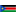

In 2013, Annual Reports were received from a total of 47 country operations and 213 reporting sites. Data was collected from a number of sources, including the Health Information System (HIS), SENS Nutrition Surveys and from partner reports.
The Public Health Section Annual Reports are used to monitor key performance and impact indicators in the sectors of Public health, Reproductive Health and HIV/AIDS, Nutrition, Food Security and Water, Sanitation and Hygiene (WASH).
In 2013, Annual Reports were received from a total of 47 country operations and 213 reporting sites. Data was collected from a number of sources, including the Health Information System (HIS), SENS Nutrition Surveys and from partner reports.
The reports are used to monitor the UNHCR Public Health Strategic Plan 2014-2018, to report into the UNHCR Results Based Management software (Focus) and to support the UNHCR Annual Programme Review (APR) 2014.
10 key indicators were selected for reporting in the detailed country reports. The proportion of global reporting sites that met standards for each indicator is shown below.
Under 5 mortality rate
of a total of 188 reporting sites met the standard
standard
< 1.5 deaths/1000/ month
Health utilisation rate
of a total of 196 reporting sites met the standard
standard
1-4 new visits/refugee/year
Measles vaccination coverage
of a total of 157 reporting sites met the standard
standard
> 95%
Skilled attendance at delivery
of a total of 203 reporting sites met the standard
standard
> 90%

Proportion of rape survivors who receive PEP
of a total of 208 reporting sites met the standard
standard
100%
Global Acute Malnutrition rate
of a total of 113 reporting sites met the standard
standard
< 10%
Severe Acute Malnutrition rate
of a total of 113 reporting sites met the standard
standard
< 2%
Litres water/person/day
of a total of 111 reporting sites met the standard
standard
> 20
Number persons/latrine
of a total of 113 reporting sites met the standard
standard
< 20
Click on a country to view key indicator data, and a link to visit the country homepage in Twine. From there, you can download the Annual Report 2013 and also access more interactive graphs and statistics.
Note: If you do not yet have an account with Twine, you will need to first register and create one.
Click on a location to visit the country homepage in Twine. From there, you can download the Annual Report 2013 and also access more interactive graphs and statistics.
Note: If you do not yet have an account with Twine, you will need to first register and create one.
| West Africa | Central Africa | East and Horn of Africa | South Africa |
|---|---|---|---|
 Burkina Faso Burkina Faso |
 Burundi Burundi |
 Chad Chad |
 Mozambique Mozambique |
 Cote d'Ivoire Cote d'Ivoire |
 Cameroon Cameroon |
 Djibouti Djibouti |
 Namibia Namibia |
 Ghana Ghana |
 Central African Republic Central African Republic |
 Eritrea Eritrea |
 Zambia Zambia |
 Liberia Liberia |
 Congo Congo |
 Ethiopia Ethiopia |
|
 Democratic Republic of the Congo Democratic Republic of the Congo |
 Kenya Kenya |
||
 Rwanda Rwanda |
 South Sudan | ||
 Sudan Sudan |
|||
 Tanzania Tanzania |
|||
 Uganda Uganda |
| Middle East and North Africa | Asia and Pacific | Americas | Europe |
|---|---|---|---|
 Algeria Algeria |
Bangladesh |
 Brazil Brazil |
 Azerbaijan Azerbaijan |
 Egypt Egypt |
 India India |
 Colombia Colombia |
|
 Iraq Iraq |
 Indonesia Indonesia |
 Costa Rica Costa Rica |
|
 Jordan Jordan |
 Islamic Republic of Iran Islamic Republic of Iran |
 Mexico Mexico |
|
 Lebanon Lebanon |
 Malaysia Malaysia |
 Panama Panama |
|
 Mauritania Mauritania |
 Nepal Nepal |
 Venezuela Venezuela |
|
 Syrian Arab Republic Syrian Arab Republic |
 Pakistan Pakistan |
||
 Yemen Yemen |
 Thailand Thailand |
Twine aims to strengthen evidence based decision-making in humanitarian programmes. It integrates a range of information management tools that can be used to assess, monitor and evaluate humanitarian interventions across a range of sectors and operational settings. The tools have been developed by the UNHCR but are freely available for partners to use in the field.
For more information please visit the Twine website http://twine.unhcr.org or write to HQHIS@unhcr.org